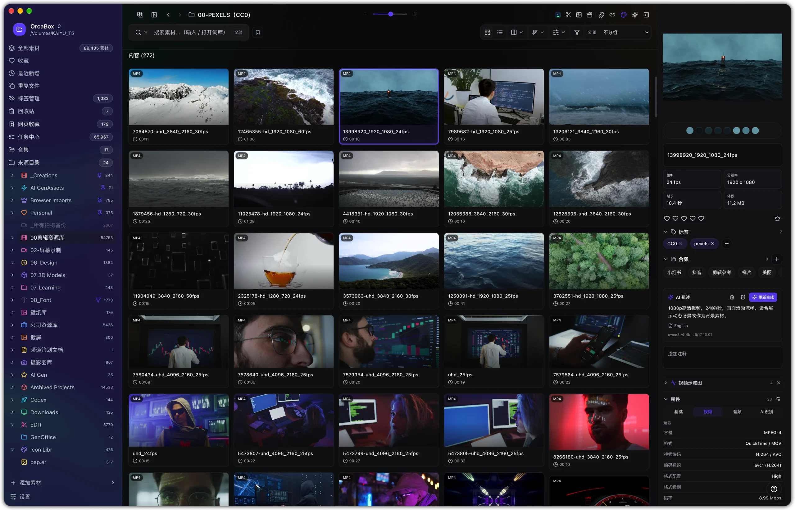
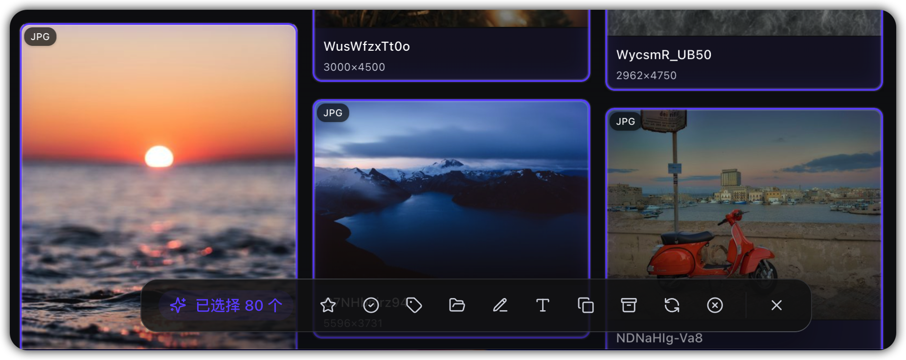
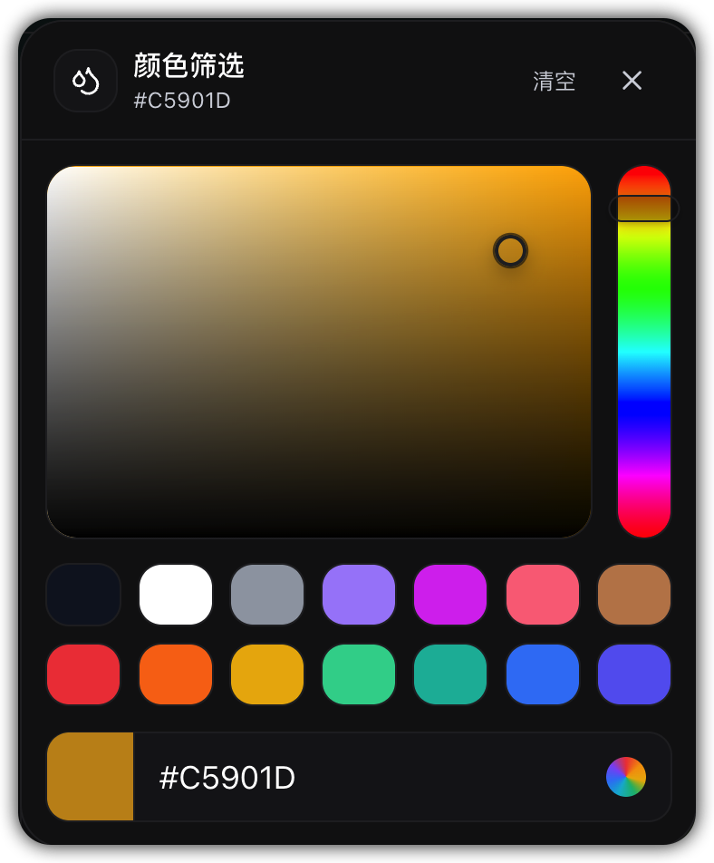
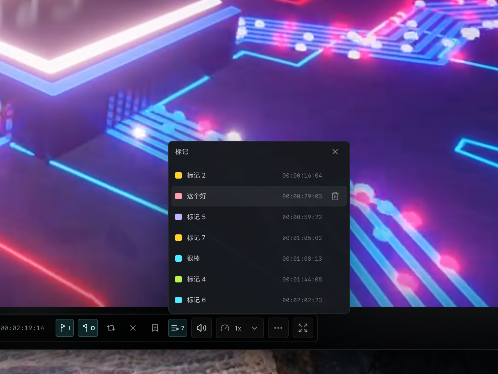
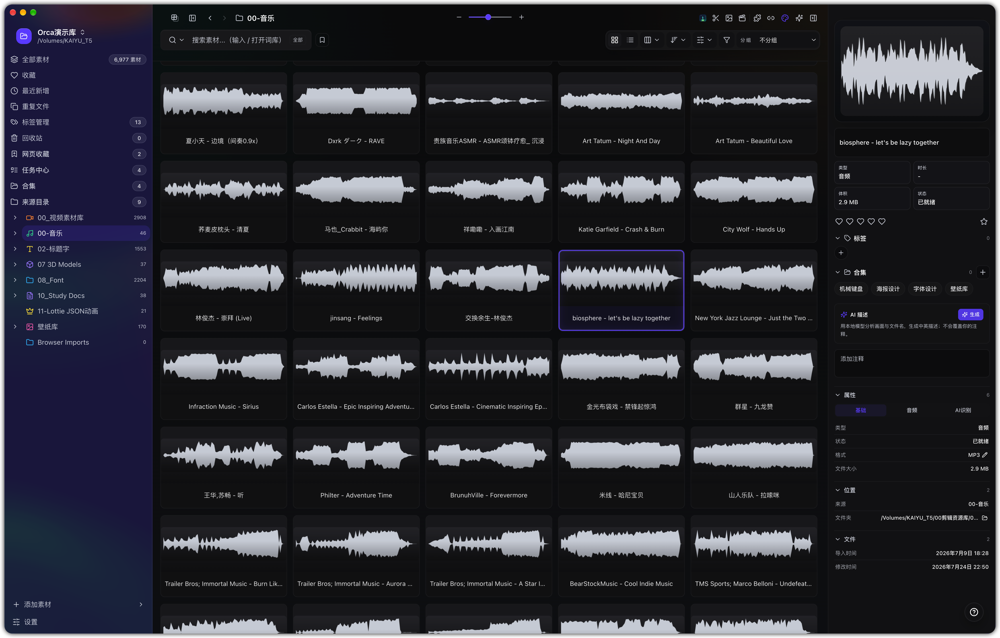
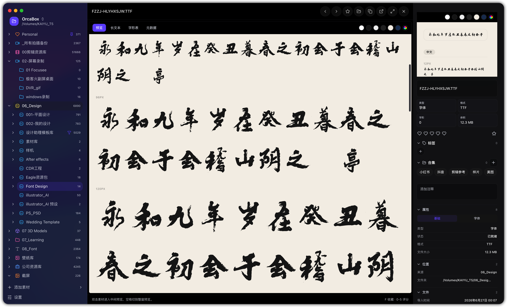
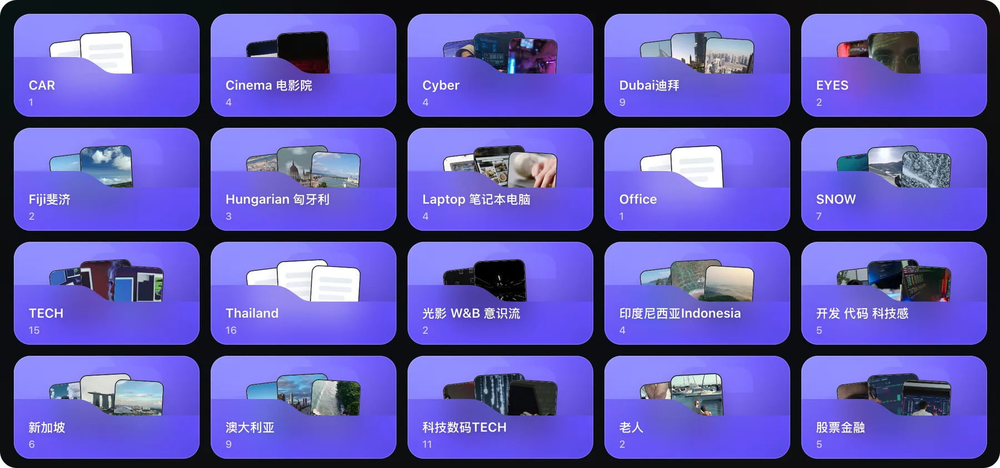
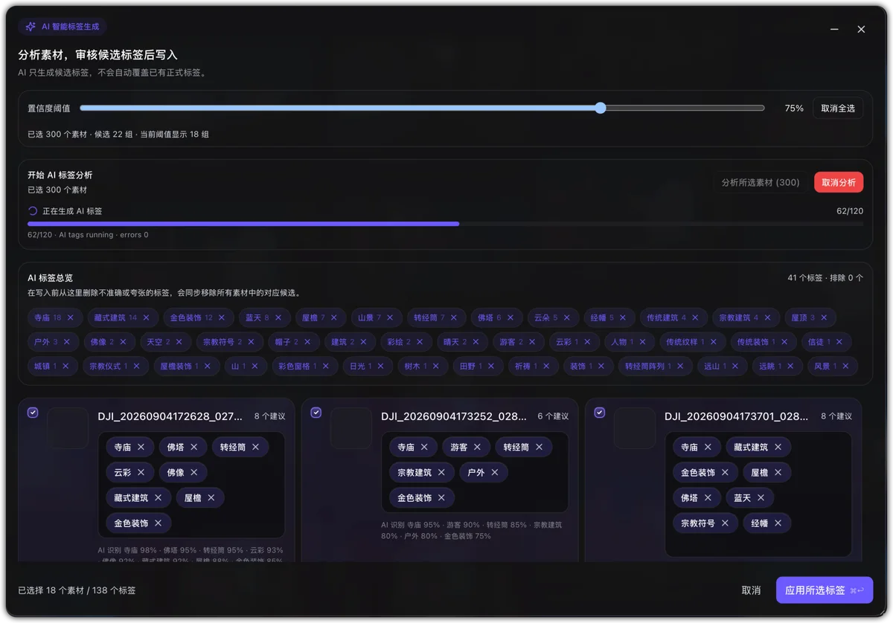
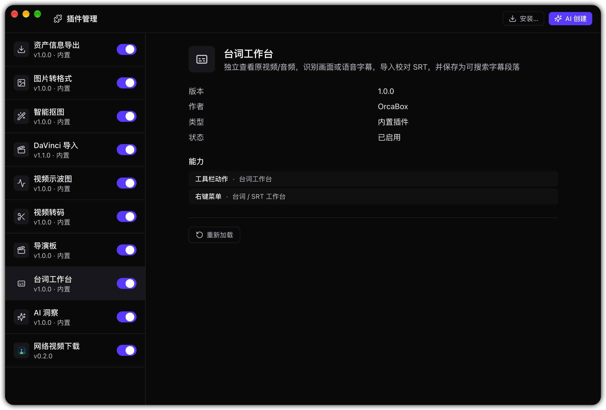

产品概览
OrcaBox 是面向创作者的本地素材管理工具。它把分散在磁盘、项目文件夹和网页中的内容汇总到一个资产库里，方便预览、检索、分类和送往其他创作软件。
资产库与原文件
资产库保存索引、缩略图、标签等管理数据；添加来源文件夹时不会把原文件复制到资产库。需要直接导入或移动文件时，请留意相应操作的目标目录与确认提示。
主界面分区
左侧切换来源、合集和管理模块；中间浏览素材；点选后在右侧查看详情。双击素材可打开独立预览。

下载与安装
选择安装包
- 在官网下载区选择适合设备的安装包：macOS Apple Silicon / Intel，或 Windows x64 安装器 / 免安装版。
- 从 CNB 主下载源获取文件；遇到下载问题可使用 GitHub 备用源。
- 安装并启动 OrcaBox。首次使用按下一节建立资产库；已有资产库则选择“打开已有资产库”。
检查更新
更新入口位于应用内“设置 → 概览 → 关于与更新”，也可从右下角“帮助与支持”检查更新。macOS 更新通过下载 DMG 手动安装；Windows 按应用内更新提示操作。
首次建立资产库
创建独立资产库
先准备一个独立的空文件夹，存放索引、缩略图和缓存；不要选磁盘根目录或原始素材文件夹。在欢迎界面点“创建资产库”，指定这个空文件夹。已有资产库则点“打开已有资产库”，选择包含 data/library.db 的目录。
添加素材来源
从左侧“来源文件夹”添加存放图片、视频、音频或工程文件的目录，可以添加多个磁盘上的路径。此时建立索引，不复制原文件。
等待扫描与切换资产库
后台扫描后会显示素材、元数据和缩略图。首次索引较慢时，可先查看任务状态；左上角的资产库名称可用于切换资产库。
切换资产库只切换当前索引，不移动原始素材。移动磁盘未连接时，先重新连接来源磁盘，再打开资产库或刷新来源。
浏览、选择与导入
浏览方式
“全部素材”汇总各来源；左侧来源树可聚焦具体目录。顶部可切换网格/列表、布局密度、排序、筛选和分组。图片卡片按原图方向和宽高比显示，长图不会被裁切或压缩变形。
选择与批量操作
点选素材查看详情；多选后底部出现批量工具栏，可统一收藏、标记已处理、添加标签或合集、批量重命名、复制名称/路径、导出、刷新缩略图或移入回收站。先核对选中数量；重命名与移入回收站会影响原文件。

批量重命名
选中多个素材后打开“批量重命名”，在“自定义”中点击或拖动标签组成命名顺序。可使用原文件名、文件夹名称、序号、下划线和自定义文字；标签放入命名格式区域后可继续拖动调整顺序，也可单独移除。序号支持设置起始值和位数，另有“查找替换”方式可批量替换原文件名中的文字。预览会显示新旧文件名，扩展名会自动保留；确认后会直接修改原文件名，重名冲突会跳过。
详情面板信息卡
点选素材后，右侧详情顶部会显示类型、尺寸、格式、体积等信息卡；多选素材时，详情面板会改为显示汇总统计、批量操作、选择概览、AI 描述、批量标签和批量备注卡片。进入“设置 → 浏览 → 详情面板卡片”，可以隐藏或重新打开这些板块：单选的信息卡区域作为整体一键隐藏或显示，多选的各卡片可单独控制。关闭后对应板块立即从详情面板消失，重新打开即恢复。此设置只影响界面显示，不修改素材与原文件；macOS 与 Windows 行为一致。
文档卡片背景色
Markdown、TXT 等文字素材在网格和右侧详情中的卡片默认跟随当前主题（深色主题黑底浅字、浅色主题白底深字）。进入“设置 → 界面外观 → 卡片背景色”，可以从几组淡雅浅色底（卡其纸、米杏、亚麻灰）或深色底（石墨、纯黑）中挑选；卡片内的正文、链接、引用与代码底色会随所选配色一起切换，设置立即生效并自动保存，网格卡片与详情卡片同步更新。此设置只影响界面显示，不修改素材内容与原文件；macOS 与 Windows 行为一致。
预览与取用
双击打开独立预览。右键菜单可按素材类型提供复制路径、在其他应用打开、导出、重命名等操作；也可按目标软件支持情况拖拽素材。macOS 可使用“共享”打开系统共享面板；Windows 版该入口目前标记为“开发中”，暂时请使用“复制到剪贴板”后粘贴到目标应用。
导入与移动文件
添加来源目录只建立索引。把本地文件导入已有来源，或移动素材到其他目录，是文件操作；执行前核对目标路径、同名文件处理和确认提示。「移动资源」和「移动文件夹」对话框顶部显示完整的目标路径栏，点击任意上级路径段即可直接选中该目录、在文件夹树中定位并清空搜索，无需逐层展开；路径过长时自动滚动跟随最新一段。也可以从微信等桌面应用直接把图片拖入当前来源文件夹；macOS 下 OrcaBox 会优先读取拖拽数据并暂存后导入，避免直接打开微信受保护的缓存路径，Windows 也保留同样的字节导入回退。微信拖出的文件在拖拽刚结束的几秒内可能仍被微信占用（表现为 operation not permitted 错误），OrcaBox 会对这类微信路径自动等待其释放（最长约 20 秒）后再完成导入，期间无需任何操作；来自微信容器的文件始终按复制方式导入，不会被移出微信。若超过等待时间仍未成功，或原应用尚未提供可读取的数据、文件仍在下载，请先在原应用保存到本地或等待下载完成后再拖入。复制模式不会修改原文件；移动模式会在目标文件校验完成后尝试清理源文件，权限不足时可能保留源文件（微信等聊天应用的文件不会被移动，只会复制）。
搜索与筛选
关键词与条件
在顶部搜索框查找文件名、标签和素材信息；输入 / 可打开词库。筛选面板可按类型、扩展名、收藏、评分、颜色和标签缩小范围，清空条件后恢复完整结果。
按颜色查找
图片、GIF 或视频代表帧完成颜色分析后，可在颜色面板选择色相、亮度区域或输入色值，查找相近颜色。

保存为智能文件夹
设好搜索词和筛选条件后，在搜索中心使用“保存当前搜索”。保存的搜索会作为智能文件夹供以后调用；改变条件时请重新保存需要保留的组合。
多格式预览
双击素材进入预览；是否可用以及具体控制项取决于格式和系统环境。下面是主要预览类型：
HTML 网页预览
双击 HTML 素材可在预览与源码视图之间切换；网页可读取同一目录中的相对资源。为了保护资产库，预览不能读取该目录以外的素材，也不能加载外部网络资源、打开弹窗或提交表单。HTML 文件超过 16 MiB 时请使用源码视图。预览样式只注入临时响应，不会修改原文件；macOS 与 Windows 使用相同限制。
复制排版内容：预览工具栏的「复制排版」会把当前网页按显示效果复制为富文本，可直接粘贴到公众号、知乎、Notion 等编辑器的正文里，保留段落、字号、颜色、间距与圆角等排版，并把同一目录下的本地图片一并带入，不必逐张上传。复制只读取文件，不修改源 HTML，也不写入资产库。排版按预览当前宽度计算，宽图等比缩到适合正文的尺寸；远程图片不改写，粘贴后由目标编辑器自行处理。
图片与设计文件
打开 PNG、JPEG、WebP、AVIF、HEIC、PSD、TIFF 等图像，可按格式查看缩放、色板、直方图及元数据；部分图片还提供裁剪和处理工具。文件损坏或系统不支持解码时，预览可能不可用。
素材网格中的 JPG、PNG、WebP、AVIF 长图使用按短边保留细节的独立缩略图缓存，兼顾清晰度与滚动开销；旧版低清长图缓存会在浏览时按需更新，不修改原图片。超长图片仍受缩略图像素与边长上限约束，查看原始细节请双击进入图片预览并放大。macOS 与 Windows 使用同一套长图缩略图策略。
视频与时间点标记
视频预览直接使用原文件或系统/原生媒体运行时；可查看胶片条、将当前帧设为封面，并在播放位置添加标记，从标记列表跳回对应时间码。不会为播放生成视频代理文件；具体编解码能力取决于系统与可用运行时。MKV/Matroska 等浏览器不直接支持的格式，在 Windows 上同样由应用内嵌的原生播放器播放原文件，不再弹出独立播放器窗口。
进入整窗全屏播放后，标题栏、工具栏与底部进度条统一跟随播放状态：控件在播放时自动淡出，移动鼠标即唤回，持续移动会保持显示，停手约 2 秒后再次淡出。暂停、拖动进度、打开音量或更多菜单、缓冲加载和播放出错时控件保持可见。按画面的承载方式分两种表现：浏览器可直接播放的格式（H.264/HEVC MP4、WebM 等）画面铺满整窗、控件悬浮在画面上，顶栏以渐进模糊融入画面——模糊随内容向下融散，配合连续羽化的暗部渐变，标题栏与画面之间没有接缝线；原生播放的格式（ProRes、相机原片、MKV 等，macOS 的 AVPlayer/libVLC 与 Windows 的内嵌 mpv）保持控件让位布局，控件隐去后画面平滑扩展铺满，控件不压在画面上。两种方式下画面四周的黑边始终为纯黑，侧边栏、素材网格与详情面板不会从黑边中透出。原生播放画面绘制在系统视图中，网页收不到该区域的鼠标事件，因此应用按系统光标位置判定移动，两个平台的手感一致。中间的窗口内预览不做隐现，保持原有布局与常驻进度条；Esc 与原有快捷键在全屏下照旧可用。

视频 LUT 与色彩管理
视频支持加载 3D LUT（.cube / .3dl / .csp）做调色预览，全程实时 GPU 应用，不生成或修改任何视频文件。把 LUT 文件放入资产库的 luts 文件夹后会自动识别；视频预览顶部工具栏的「LUT」调色板按钮（已套用时高亮）展开可视化弹层，每个 LUT 以色彩预览图呈现，点击即套用，弹层内可直接拖动强度滑条、点标题旁的胶囊一键清除当前 LUT，按 Esc 或点击弹层外任意位置关闭；右键菜单「色彩管理」打开完整面板，同样以缩略图浏览预设，并提供强度滑条与启停开关。启用 LUT 后，视频素材网格已有的静态 poster 缩略图也会在显示层同步套用 LUT，不会写入新的缩略图或视频文件；读取失败时保留原缩略图。多选若干视频后从右键打开面板即为批量模式，一次套用/清除/调强度会作用于全部选中素材（可撤销）。面板右侧的「输入色彩」用于告诉应用素材的原始编码：标记了 PQ/HLG 或 Rec.2020/P3 的素材在套用 LUT 时会按探测值自动解码，也可一键点选 ARRI LogC、Sony S-Log、V-Log 等相机 Log 芯片手动指定，更冷门的组合收在「高级覆盖」里。生效范围取决于播放路线：Browser 路径全部生效；macOS 上走 AVPlayer 的相机原片（ProRes、H.264/HEVC MOV/MP4）LUT 经系统 Core Image 实时应用；其余原生路线仅保存设置并在预览时提示。HDR 素材套用 LUT 时会映射到标准动态范围显示。需要注意：网格里的悬停速览播放的是原始画面，LUT 仅在 poster 缩略图与播放器中生效；带 LUT 的素材悬停时会先显示调色后的 poster 约四分之一秒再开始播放，精确的调色效果以播放器为准。
音频波形与试听
音频网格显示波形；点选后可在卡片和右侧详情试听，双击进入独立预览。已选音频播放时，鼠标离开卡片不会自动暂停；切换这些预览区域会延续播放位置，不会同时播放多个声音。显式暂停、取消选择或切换播放对象时停止。

Lottie 动效
JSON 和 .lottie 动效在可见素材网格中实时播放；打开独立预览可调整播放速度和循环。动画能否完整显示取决于资源内容。
3D 模型
GLB、GLTF、OBJ、FBX、USDZ 等模型可交互查看。材质、纹理和外部依赖是否齐全，取决于模型文件及其关联资源。
字体预览
打开字体素材可切换预览、长文本、字形表与元数据，核对字形效果和文件信息后再用于设计项目。

文档与代码
PDF、文本、Markdown 和代码文件可从素材列表进入查看；可读内容与显示方式随格式而异，需要修改源文件时请在相应编辑器中打开。
标签、合集与素材整理
收藏、标签与备注
选中素材后，可在右侧详情的“属性 → 基础”里点击星级（★）设置 0–5 分评分；标签和备注也在详情中维护。收藏不再显示在详情栏，可通过素材右键菜单或多选后的批量工具栏设置。“标签管理”集中维护已有标签。评分默认保存在 OrcaBox 资产库中；如需与 Lightroom Classic / Bridge 互通，可到“设置 → 浏览 → Adobe 评分”开启同步。
Lightroom / Bridge 星级评分同步
开启“与 Lightroom / Bridge 同步星级评分”后，OrcaBox 会检查现有 XMP 星级：已存在的 XMP 评分导入资产库；没有 XMP 评分但 OrcaBox 已有星级的图片，会把星级写入支持的图片元数据或同名 RAW .xmp 旁车文件。此后在 OrcaBox 修改评分会写回 XMP；Lightroom / Bridge 修改 XMP 后，OrcaBox 会通过来源文件监听更新评分。RAW 旁车需与原图处于同一目录并使用相同文件名；同一目录下存在同名 RAW + JPEG（双卡槽相机）时，旁车评分会应用到 RAW 文件。支持情况取决于图片格式是否可由 ExifTool 写入 XMP；视频、音频和其他素材仍只在 OrcaBox 中评分。开启同步可能修改原图片或旁车文件，请先备份重要素材；macOS 与 Windows 使用相同的同步行为。
Lightroom 侧的前提：Lightroom Classic 默认把评分只保存在目录（Catalog）数据库里，需要在「目录设置 → 元数据」勾选“自动将更改写入 XMP”后，评分才会写入文件，OrcaBox 才能读到；Bridge 会即时把评分写入 XMP，无需额外设置。反过来，在 Lightroom 中已经导入过的照片，读取 OrcaBox 或 Bridge 写入的新评分需要执行「元数据 → 从文件读取元数据」，Lightroom 不会自动重读外部修改过的文件。
合集
把不同来源的素材放进同一合集，方便按项目查看，不要求移动原文件。可从左侧合集入口回到已整理的内容。

常用整理视图
左侧的收藏、最近新增和重复文件等入口，分别帮助查找常用、近期和可能重复的素材；处理重复项前请逐个核对文件。
回收站与恢复
移入回收站会把原文件放入对应来源根目录下的 OrcaBox 隐藏回收目录，不只是移除索引。到回收站可恢复所选、永久删除或清空；永久删除前请确认要保留的文件。
来源目录管理
连接与浏览目录
“来源文件夹”可以连接多个磁盘和项目路径。展开左侧目录树，进入子文件夹浏览；资产库数据与这些原始目录分开保存。素材区顶部的“子文件夹”标题可展开或收起当前目录的子文件夹卡片，状态会按目录记忆；在“设置 → 浏览设置”中可更改尚未操作过的目录默认展开状态。
目录菜单与自动标签
右键来源或子目录可按位置使用自动标签、移动目录、隐藏或锁定等管理项。设置自动标签后，该目录中的新增素材可沿用约定分类；移动目录会改变文件路径，操作前请确认目标位置。
右键文件夹还可置顶，或按名称排序当前子层级及全部子层级；置顶项优先显示。排序与置顶只改变左侧目录树的显示顺序，不会移动或修改原文件。
重扫、重新分析与丢失文件
目录菜单可重新扫描文件或重新分析素材。素材显示丢失时，先检查移动磁盘和原路径；需要排除某个目录时，区分“移除来源”与“移除索引并排除扫描”，按菜单提示确认影响范围。
扫描同时只运行一个来源目录：重复点击重新扫描会显示“等待扫描队列”，并在当前扫描结束后自动补扫一轮。若某次扫描长时间没有任何进度，OrcaBox 会自动停止它并释放队列，之后可再次发起扫描。开启“Adobe 评分同步”时，读取星级所用的外部工具若不可用会在数秒后超时并暂停本次会话的同步，素材索引不受影响。
网页收藏与浏览器采集
保存网页链接
把网页链接拖入 OrcaBox 或使用网页收藏入口，集中保留网页标题、来源与预览信息；收藏可按文件夹整理。网页收藏与下载本地文件并不是同一件事。
连接 Chrome 扩展
可选的 Chrome 扩展用于扫描当前页面中的图片、视频、Lottie 与素材链接，再发送给本地 OrcaBox。到官网下载区取得扩展 ZIP，解压后从 Chrome 扩展程序页面加载，并保持桌面应用运行。
常规下载受跨域或站点会话限制时，扩展只会在你点击“收藏所选素材”后，针对所选素材涉及的最多 5 个来源网站申请可选访问权限；允许后可使用当前浏览器会话和登录 Cookie 获取所选素材。拒绝授权不会阻止常规导入尝试。单项会话传输上限为 24 MiB，HTML 页面和验证页不会作为素材保存；扩展不会绕过验证码、反机器人挑战、签名校验、付费墙或站点访问控制。仅保存你有权使用的内容。
导入小红书笔记
采集小红书笔记时，可在浏览器扩展中选择当前笔记并发送到 OrcaBox；也可在电脑端“粘贴链接导入”中粘贴笔记链接或从手机复制的分享文本——完整笔记页链接（xiaohongshu.com/explore/…、xiaohongshu.com/discovery/item/…）与 xhslink.cn 短链接都支持。粘贴一条笔记链接时，OrcaBox 会读取笔记页面自带的公开数据并导入整篇笔记：所有图片逐张保存，Live 图连同动效视频一起保存；「网页导入方式」设为“单图”时只导入首个素材，设为“批量”（推荐）时导入全部图片与 Live 图，并通过浏览器扩展采集时把笔记标题、作者、话题、正文及原文链接另存为该目录下的 note.md。不会改动网页原内容。受页面登录、资源权限或链接失效影响，部分素材可能无法下载，完成后请核对导入结果。
未登录状态下，导入读取的是小红书移动端分享页的公开数据，图片为平台合成水印的版本（画面中央带「小红书」字样，任何工具都无法从图片里去除）。在 设置 → 账号登录 登录小红书后，导入会改用你的账号身份读取桌面版页面，保存的是无水印原图；私密或仅登录可见的笔记也因此可以导入。
账号登录
设置 → 网络中的「账号登录」提供小红书、抖音的站内登录：点「登录」会打开 OrcaBox 内嵌的登录窗口，正常完成登录后窗口自动关闭并显示“已登录”。登录信息保存在 OrcaBox 自己的独立分区里，不读取、不修改系统浏览器中的任何登录状态；点「退出登录」会清空对应平台的全部站点数据。小红书登录态用于笔记导入（无水印原图、私密笔记）；抖音登录态用于视频下载（仅登录可见的视频与更高清晰度）。
采集网页内容前，请确认你有权保存和使用相应素材；网页资源可能因登录状态、来源限制或链接失效而无法获取。
网络视频下载面板
「网络视频下载」以独立面板窗口运行：从插件中心或下载入口打开后，可把面板拖到屏幕任意位置、从边缘缩放，也可最小化到一旁，下载期间不遮挡资产库。把一个或多个视频链接批量粘贴进输入框，面板会去重后加入下载队列，最多两路并发下载；正在下载与已完成的任务都会在面板内列出。
面板顶部的「下载到」一行可在系统下载目录、自定义文件夹与 OrcaBox 来源目录之间切换。选择来源目录后会打开文件夹树，逐层展开并选定任意层级；文件夹按需加载（只读取当前层级，展开时再取下一层），大库下也能立即打开，排序与侧栏一致。下载完成的文件保存到所选目录，并自动进入当前资产库，不产生重复条目。下载引擎（yt-dlp）在首次使用时自动获取并校验安装，需要联网；优先使用插件目录内的引擎，系统中已安装的引擎超过 60 天视为过期，遇到 403 等过期特征会自动刷新并重试一次。抖音（含 v.douyin.com 短链与桌面视频页）不走 yt-dlp，由 OrcaBox 内置解析器直接读取页面接口，因此不需要选择浏览器登录态，也能拿到该视频提供的全部清晰度；其余平台可使用设置中选择的浏览器登录态。若浏览器 Cookie 读取失败，识别与下载都会自动尝试匿名访问，重试期间任务保持进行中；需要登录的视频仍须可用的登录态。macOS 的完全磁盘访问权限应对应实际运行的程序，已安装版的授权不代表 DEV 获得相同权限；Windows 若遇到浏览器资料锁定，可完全退出浏览器后重试。识别出视频后，卡片上会列出这条视频实际可用的分辨率，点选即按该档位下载，不选则跟随「画质上限」设置。同画质下优先选择 H.264 编码（兼容性最好，可直接导入达芬奇、Premiere 等剪辑软件），平台未提供时会下载最佳可用编码（如 VP9/AV1 或 HEVC），OrcaBox 内置播放器可直接回放。队列卡片上的「重新获取链接并下载」会在链接过期或解析结果失效时重新解析后再下载，另一个按钮则沿用当前解析结果直接下载；下载完成的卡片会显示保存目录，点按目录即可在文件管理器中定位文件。该功能需 OrcaBox 1.3.6 或更高版本；下载只会保存你有权使用的内容，不会修改来源网站或本地已有文件。
本地 AI 与颜色分析
准备本地模型
在“设置”的本地模型中心准备所需模型，再对支持的素材运行 AI 标签、描述或相关索引任务。模型下载、运行速度和支持能力取决于设备及所选模型。
本地模型中心的外接模式（LM Studio / Ollama 等 OpenAI 兼容端点）支持鉴权：勾选「端点需要 API Key」后输入密钥即可，密钥经系统安全存储加密保存，不写入设置文件；端点返回错误时状态码会记录到诊断日志，方便排查 401 一类的配置问题。云端兑底默认关闭：在“设置 → AI 智能 → 云端兑底”选择本地/外接推理失败后的处理方式——「永不」失败即失败（默认）；「询问」批量任务开始前一次性确认是否允许已启用的云端端点（按量计费）接手，确认后本批有效；「总是」自动兑底。兑底会把资产图片、文件名与语音转写发送到该云端端点。
标签与结果审查
选中图片、GIF、视频或音频素材，打开“AI 标签”审查界面，点击“分析所选素材”；也可分析全部未处理素材。批量分析会为图片/GIF提取视觉标签和语义向量，为视频分析代表帧，为音频执行转写并生成音频标签。分析不要求先播放媒体，播放也不会暂停分析。macOS 与 Windows 使用相同的批处理队列，已有语义索引会复用；首次启动模型或补建索引仍需要时间，实际速度取决于设备和模型。分析结果可在审查界面核对后写入标签，再用于分类和检索；不要把自动生成的标签当作人工确认的事实。分析不修改原始媒体文件或手写注释。

生成图片描述
选中图片后，可在右侧详情的“AI 描述”点击“生成”。HEIC/HEIF 画面在 macOS 或 Windows 上通过系统图片解码后送入模型；Windows 可能需要安装 HEIF 图像扩展。若系统无法读取损坏或不受支持的文件，界面会显示原因，可将原图另存为 JPG/PNG 后重试。生成的描述独立保存，不修改原图或手写注释。
AI 智能搜索
在搜索栏范围菜单中选择“AI 智能”可检索 AI 描述、AI 标签、图片视觉语义以及视频画面和音频转写索引；口语化近义词会自动扩展，例如“女孩子”也会尝试匹配“女孩、女生”等表达。结果卡片会标明“AI 描述”“AI 标签”“语义”“视频画面”或“音频转写”等匹配来源。搜索范围菜单会显示视觉、描述、标签、视频画面和音频转写索引覆盖量；索引未完成时，结果只覆盖已经完成分析的素材，不代表未出现的素材一定不相关。macOS 与 Windows 使用相同的搜索范围与索引状态提示。
反推图片提示词
在图片或 GIF 上右键选择“反推提示词”，并在“设置 → AI 智能”启用支持视觉输入的对话端点。系统会要求模型逐项检查主体、外观、动作、场景层次、构图、镜头、光线、风格、文字和约束，并在结果偏短或细节不足时自动尝试第二轮修复。结果保存到该素材的资产库记录，不修改原图，也不会自动写入手写注释。右侧“属性 → AI识别”可切换中文、英文、反向词和 JSON，点击复制按钮可复制当前视图；双击内容可编辑并保存。质量分是基于字段覆盖、细节密度、具体性、双语平衡和提示词可用性的自动文本指标，不等同于已验证与原图事实完全一致。反推过程会把所选图片发送到当前配置的视觉端点，请先确认该服务的数据处理和隐私政策。macOS 与 Windows 的入口和保存行为一致。
颜色分析与远端能力
颜色提取和相似颜色检索可帮助寻找视觉参考。
插件与创作工具
插件中心
从插件中心查看和管理已安装工具。在左侧搜索名称、介绍或作者，也可按全部、已启用、已停用、外部和内置插件筛选。点击插件名称区域进入独立详情页，查看介绍、版本、作者、支持平台、能力和权限；点击「返回插件列表」回到原来的列表位置，或按 Esc 返回。页面开合与左侧切换带有轻量过渡，系统开启「减少动态效果」时会简化动画。
右上角「本地安装」可选择本地插件包，「AI 创建」可打开插件创建面板。列表中的开关与详情页中的「启用 / 停用」控制插件状态；详情页还可重新加载，外部插件支持卸载。卸载会移除插件文件及该插件保存的设置，不会修改资产库原始素材。插件可把操作接入素材菜单或独立面板，具体入口和权限以插件界面为准；安装第三方插件前确认来源与授权范围。
「发现插件」与「待更新」会从官方 GitHub / CNB 静态插件目录读取可用版本。发现页显示插件介绍、作者、版本与安装入口；待更新页只列出高于本机版本的插件。点击安装或更新后，OrcaBox 会下载 HTTPS 插件 ZIP，校验目录提供的 SHA-256，再安全解压并复用本地安装流程；网络不可用时会显示上次成功读取的缓存目录。首期目录只承担发现、下载和版本检查，不负责支付、账号或联网激活。macOS 与 Windows 使用相同的管理界面，单个插件能否运行以详情页的平台声明和依赖要求为准。
安装包中会随附「网络视频下载」插件（0.3.0），首次启动时自动准备好，可直接使用。它与自行安装的插件完全一致：可以在插件中心停用或卸载，也可以替换为自己更新或修改过的版本；OrcaBox 不会把它当作内置插件，也不会覆盖你已安装的版本。

视频转码与裁剪
在素材网格选中一个或多个视频，从工具栏或右键菜单打开内置「视频转码与裁剪」独立原生窗口。预览直接读取原视频；按 Space 播放或暂停，拖动时间线设入点和出点，或按 I/O 以当前播放头设点，方向键按帧率逐帧移动。当前选中的视频使用所设范围，批量中的其他视频默认完整导出。
可创建副本并选择输出目录、文件名、MP4/MOV/MKV/WebM、H.264/HEVC/VP9、分辨率和目标码率；也可在保持源容器时安全替换原文件。编码质量档映射为相应目标码率，明确设置的视频或音频码率、分辨率、编码器及容器会触发重新编码；所有数值最终由 FFmpeg 参数执行。原画快速流复制不重新编码，边界只能落在可用关键帧；逐帧精确边界需要重新编码。导出写入临时文件，完成后经 FFprobe 验证，再提交到目标位置；面板显示编码进度、速度、预计剩余时间和失败原因。macOS 使用 VideoToolbox，Windows 使用 Media Foundation；具体可用编码器取决于系统及所带 FFmpeg 是否包含该编码器。导出不会创建预览代理视频。
图像对比工具
随 OrcaBox 附带的外部插件「图像对比工具」会在独立窗口中显示左右两个图片栏。它可以在插件中心停用、重新加载或卸载，也可从素材网格工具栏或图片右键菜单打开；打开后，把素材库中的图片拖到左栏或右栏，左右两组都可放入多张图片。窗口底部是固定高度的左右两组横向缩略图栏，多张图片只会横向排列，不会挤占对比区。点选缩略图即可切换当前图片，点击缩略图右上角的移除按钮可移除该项；移除只影响本次图组，不删除素材。拖入多选图片会按拖放目标加入对应一侧，重复拖入同一素材不会重复添加；底部图组区域也可接收拖放。
中间工具条提供并排、分屏滑杆、半透明叠加和差异混合四种查看方式；叠加模式可以调整上层图片的不透明度。缩放和平移会同步作用于两侧图片，支持滚轮缩放（按住 Ctrl/Cmd）和放大后拖动；双击图片区域或点击重置按钮可恢复适应窗口视图。分屏滑杆可直接拖动，也可聚焦后用方向键微调。交换按钮可调换左右图片组，置顶按钮可控制窗口是否保持在其他窗口上方。
支持范围跟随 OrcaBox 图片预览能力；特殊格式会先尝试应用生成的只读预览，浏览器无法显示且预览源不可用时可能无法参与比较。差异模式用于视觉检查像素混合结果，不计算差异百分比或误差指标，也不提供自动配准、裁切或导出对比图。工具只读取图片和预览，不会改写、覆盖或转码原始文件；macOS 与 Windows 共用同一套对比操作。
照片调色
随 OrcaBox 附带的外部插件「照片调色」会打开独立 Develop 面板。选中一张或多张图片后，从素材右键菜单或工具栏打开，当前选择会进入左侧胶片栏；也可以先打开面板，再点击「导入图片」选择多张本地图片，或把图片直接拖入面板。点击胶片栏缩略图切换当前编辑对象，每张照片的调色参数各自独立保存。导入或拖入库外图片时，如果该文件所在路径已经在资产库来源目录里，OrcaBox 会直接复用已有素材，不会重复复制一份进资产库。
右侧面板采用 Camera Raw 式布局：直方图固定在面板顶部（滚动参数时不跟随），参数区独立滚动，最右一列竖排图标栏切换板块——调整、曲线、颜色、色轮、细节、效果、校准、裁剪、蒙版、擦除、预设。调整区提供一键「自动」（灰世界白平衡 + 目标中灰曝光起步）、「取样」白平衡吸管（点击照片中的中性灰或白色区域自动校正色温/色调）、参考图匹配（先把当前照片设为参考图，再切换目标照片并点击「匹配参考图」，可调整匹配强度）、白平衡预设下拉（原照/日光/阴天/阴影/白炽灯/荧光灯/闪光灯），以及 Camera Raw 的纹理、清晰度、去薄雾三个效果增强滑杆。滑杆支持滚轮微调（Shift+滚轮进入更细步进）与双击复位。蒙版支持最多 12 张径向/线性渐变蒙版：每张带独立的曝光/对比度/饱和度/色温/色调局部参数与羽化、反转；径向蒙版可分别拖动右侧、下方手柄自由拉成椭圆，并用顶部手柄旋转；蒙版面板还提供紫色 AI 操作按钮，可自动生成主体、天空、背景语义蒙版，结果会继续使用现有羽化、局部调整和添加/减去/相交组合；同时支持颜色范围、明度范围，蒙版框内的半透明红色区域实时显示羽化范围。在画面上直接拖动中心点定位，局部效果叠加在全局调整之上并随导出生效。擦除为污点修复：在画面上点击污点即自动从邻近干净区域取样修复（色调匹配边缘自然融合），可拖动源点手动指定取样位置，支持大小/羽化调节，最多 20 个污点，随导出生效。
调整区包含白平衡、曝光、对比度、高光、阴影、白色色阶、黑色色阶、纹理、清晰度、去薄雾、自然饱和度和饱和度，滑杆轨道按调整语义显示渐变颜色与中性点；颜色区是 Camera Raw 风格的混色器，顶部按色相、饱和度、明亮度、全部切换维度，8 个颜色通道滑杆随维度显示对应颜色渐变；色轮区提供阴影、中间调、高光三个色轮，外加混合与平衡两个全局滑杆；曲线区支持 RGB 与单色通道圆点切换、通道直方图背景、输入/输出读数和中/强对比预设，曲线使用平滑单调插值，拖动控制点时曲线与照片预览逐帧同步更新；细节区包含锐化（数量/半径/细节/蒙版）、明度降噪（数量/细节）、颜色降噪；效果区包含暗角（数量/中点/羽化/圆度/高光保护）与颗粒（数量/大小/粗糙度）；校准区提供阴影色调与红绿蓝三原色色相/饱和度微调；预设区提供鲜艳、柔光、暖阳、冷调、胶片、黑白、褪色、电影感、清透、复古、高对比、哑光 12 组一键风格，应用后可继续微调。「对比原图」按钮（按住或按 \）可随时查看未调色状态。拖动参数时使用低分辨率代理帧保证实时响应，松手后自动恢复全分辨率预览；调整实时生效并保留在当前面板会话中，保存时采用非破坏性参数生成新的调色副本并重新索引到素材库。
预览画布支持滚轮以光标为中心缩放、触控板捏合缩放、左键拖拽平移（自动限制在图片范围内）、双击或「适合窗口」复位，缩放比例实时显示在工具条上。任何比例的照片都会按原始宽高比正常显示、缩放和拖拽。「保存副本」不会覆盖原始照片，也不会生成视频代理。当前第一阶段的处理以 OrcaBox 可解码的栅格图片为目标；RAW 文件可作为预览参考，但完整相机配置文件、镜头配置文件和 AI 降噪仍属于后续扩展能力。macOS 与 Windows 使用同一套参数和导出规则，具体 RAW/HEIC 支持取决于系统与 OrcaBox 当前图片解码能力。
Pinterest 以图搜图
内置插件「Pinterest 以图搜图」用资产库里的图片去 Pinterest 找视觉相似的图片。在资产库中选中一张图片，点工具栏的「Pinterest 识图」，或在该图片上右键选择「Pinterest 以图搜图」，会打开一个独立面板并立刻用这张图开始识图，不需要再手动上传。面板已经开着时，再选中另一张图片点击入口，会用新图片重新搜索。
搜索结果以瀑布流展示，窗口越宽列数越多；向下滚动会自动继续加载更多相似图片。结果超过 6 张后可组合按 Pinterest 主色系、竖图/方图/横图和像素尺寸筛选。每张图片右上角有两个按钮：下载把这张图存回资产库，勾选把图片加入批量；选中若干张后，标题栏右侧会出现「下载 N」按钮，一次性下载并导入资产库。已采集过的图片会在卡片上显示标记，再次下载时会跳过重复的 Pin。点击图片本身可以查看大图，在大图里也能单独下载，或点「Pinterest」在浏览器打开该图的原页面。
导入成功后，OrcaBox 会把 Pin ID、来源页、标题、站点域名和 Pinterest 提供的主色写入素材备注，并将图片排入本地 AI 打标任务；备注可帮助识别和跳过重复采集，AI 任务在后台运行。
在识图来源图上点「局部识图」后拖出矩形，可以只上传框选区域进行 Lens 搜索。打开 Pin 大图后，可启用来源图并排对比；「色板」会从 Pinterest 图片提取主色，点击色块复制 HEX，点「保存色卡」会生成 PNG 并导入 Imports/Pinterest/色板/。
导入成功提示里的「送到灵感画布」会将刚导入的图片作为素材卡片排到画布，并打开主窗口画布面板；已经在当前画布中的素材会跳过。画布布局会保存到资产库。
浏览我的看板
面板标题栏可切换「识图」/「看板」两个数据源。切到看板后，左栏列出你 Pinterest 账号里的看板（可搜索、滚动加载更多），点任意看板即可在右侧以同样的瀑布流浏览该看板的图片，滚动同样会继续加载。看板里的图片与识图结果共用同一套下载与「全部导入」，并会按看板名称分类落到资产库的 Imports/Pinterest/<看板名>/ 子目录。
看板是只读浏览：OrcaBox 只读取看板列表和看板里的图片，不会往你的看板里添加、删除或修改任何内容，也不会执行收藏（repin）等写操作。
关键词搜索与大图相似推荐
标题栏切到「搜索」，输入关键词回车即可像用 Pinterest 一样直接搜图：结果以同样的瀑布流展示，滚动自动加载下一页；最近 8 条搜索词连同结果缩略图保存在本机，点击即可重搜。搜到的图片与识图结果共用同一套下载、「全部导入」和按文件夹分类。
点开任意一张图查看大图时，采用左图右栏布局：左侧是大图，右侧是「更多像这样的」相似图瀑布流，点击右栏图片直接切换查看，滚动右栏会继续加载；也可以用键盘左右方向键顺序切换，或在大图里继续下载。相似推荐加载失败只影响右栏小图，不影响大图本身。
大图支持缩放查看：滚轮以光标为中心放大/缩小，放大后按住可拖动平移，双击在 1×/2× 间切换，图片下方有缩放比例工具条和一键复位。右侧相似面板的左缘可以左右拖动调整宽度，列数随宽度自动增减，面板宽度会记住你的偏好。
稳定性方面：网络瞬断时请求会自动重试一次并重新应用代理，正在重试时面板会显示状态；结果图加载失败会先自动刷新、再降级到小尺寸档，仍失败时卡片上会出现「点击重试」；任何一步失败，错误条上都有一键「重试」。
使用条件与限制：
- 需要登录 Pinterest 账号。Pinterest 的以图搜图接口只对已登录会话开放，未登录时会提示登录。点面板里的「登录 Pinterest」会打开一个内嵌登录窗口，在里面完成登录后窗口自动关闭、面板自动继续识图；登录一次会长期保持，之后点插件即可直接识图。登录状态保存在 OrcaBox 自己的独立会话里，不读取、不修改你在系统浏览器里的 Pinterest 登录。
- 网络：Pinterest 在部分网络环境下需要代理。OrcaBox 使用「设置 → 网络」里配置的导入代理；直连失败时面板会提示检查代理。识图用
i.pinimg.com的图片，下载时也只允许 Pinterest 自己的图片域名。 - 只下载图片，不改动原图。下载的是 Pinterest 提供的原图（拿不到原图时回退到最大可用尺寸），先落在临时目录再导入资产库，不会修改、覆盖或转码你现有的素材。
- 局部识图上传的是用户框选区域的图像副本；对比只在预览窗口显示，不修改来源图。保存色卡只新增一张 PNG 素材，不覆盖 Pin 图片或其他原文件。
- 自动 AI 打标会使用 OrcaBox 已配置的本地 AI 能力；模型未就绪或分析失败不会撤销图片导入。已采集标记和重复识别依据 Pin ID 与来源页记录保存在当前资产库中。
- 识图结果由 Pinterest 返回，能否命中取决于图片主体的清晰度和内容；结果里的图片来源、版权与使用许可请自行确认。
DaVinci Resolve 工作流
选择素材后，通过对应插件送入媒体池或时间线。操作前启动 DaVinci Resolve，并在插件设置中确认目标项目和位置。
macOS 连接失败排查：若插件显示"Resolve 正在运行，但无法建立脚本连接"，说明 Resolve 已启动，但 macOS 的反向 DNS（PTR）查询超时导致脚本无法挂接 Resolve。这通常是网络 DNS 配置了 114.114.114.114 等不响应本地地址反查的公共 DNS 所致。在 系统设置 → 网络 → 当前网络的详细信息 → DNS 中加入路由器/网关地址（如 192.168.31.1）或恢复为自动，然后重新刷新连接即可。
视频审阅与多版本意见
在插件中心启用视频审阅，选中视频后从右键菜单、工具栏或快捷键 Cmd/Ctrl+Shift+R 打开。监视器直接播放原视频，底部时间线支持拖动和逐帧调整；按 Space 播放/暂停、方向键逐帧、J/L 前后跳转 3 秒、M 添加点标记、R 切换选区模式。未选择绘制工具时，点击画面只负责播放/暂停；选择点、画笔、框、箭头或文本工具后才会在画面中添加标记。把播放头停在目标画面后直接输入评论，即可创建不带画面标记的时间评论。按 I/O 设置入点和出点，评论会绑定整个时间范围；按 X 清除范围。
审阅数据独立保存到 OrcaBox 的资产库数据目录，不会修改、覆盖或转码原视频。顶部可以切换版本，右上角的撤销/重做只作用于审阅面板，底部可导出固定版式的 DOCX 或 PDF；文档使用表格排版，每页最多 5 条意见，每条包含缩小后的画面、时间点或范围、帧号、类型、评论和完成状态，并带 OrcaBox 标识。DOCX 内含结构化审阅载荷，后续从右侧“导入 DOCX”会作为新版本载入，便于比较新增意见。macOS 与 Windows 都使用相同的审阅文档格式，视频能否浏览器直出仍取决于系统编解码能力。
离线审阅网页包
交付给未安装 OrcaBox 插件的客户时，分发 offline/video-review/ 整个目录并双击其中的 index.html。客户在网页中选择本地视频即可审阅：视频只在本机浏览器播放，不上传、不修改，也不会生成视频代理。网页支持同样的逐帧、点标记、选区、评论、状态和多版本操作。
网页的“导出 DOCX”与桌面插件使用同一份 customXml 结构化数据；客户导出的 DOCX 可以在桌面插件中导入为新版本，桌面插件导出的 DOCX 也可以在网页中导入。网页端的“打印 / PDF”调用浏览器系统打印功能，请选择“保存为 PDF”；网页与桌面端的报告均采用固定表格布局，每页显示 5 条意见，并保留范围、类型和状态字段。离线网页不连接 DaVinci Resolve，DaVinci 设置、连接状态和同步只在桌面插件中提供。离线包依赖目录内的本地 ZIP 读写库，不能只单独发送 HTML 文件。
台词工作台与字幕规范
选中视频或音频后，用 Cmd/Ctrl+Shift+T、右键菜单或工具栏打开台词工作台独立窗口；也可从插件面板点击「打开台词工作台」。右键菜单会把选中的多个素材带入工作台，可在右侧监视器切换素材。它可以按画面识别烧录字幕、按语音识别台词，也可以导入导出 SRT / VTT；识别与拆行只写入 OrcaBox 资产库，不修改原文件。
自动拆行的原则是先按语义断句，再受行长上限约束，而不是按字数/词数机械切割：
- 中文、日文、韩文按字符数计算（默认每行 18 字），优先在句号、问号、感叹号处断开，其次在逗号、顿号、分号处断开；只有整段完全没有标点时才按长度切分，并会避开 1～2 个字的孤立行，也不会把「大疆Pocket4」这类内嵌英文/数字拆开。中文句末的句号按字幕规范去掉。
- 英文及其他拉丁文字按单词数计算（默认每行 8 个词、约 44 个字符含空格，对齐单行 42 字符的通行上限）：一句完整的话放得下就整句保留，放不下才拆；拆的时候优先落在逗号、分号等停顿处，并且行尾不会停在冠词、介词、连词或助动词上（a / the / of / to / and / is 等），也不会留下只有一两个词的碎行。英文的句号、逗号属于正文，会原样保留。
- 俄语、希腊语、阿拉伯语、希伯来语、印地语等同样以空格分词的文字按单词规则处理，只在词与词之间断开，不会从单词中间切开。
- 泰语、老挝语、高棉语、缅甸语没有词间空格，改为按字符宽度断行，并按行宽自动切分。
面板右上角的「每行 ≤ 字 / 词」两个输入框分别对应 CJK 与拉丁文字的预算，当前字幕使用哪一套规则会高亮显示；预算只是上限，不会为了让每行「刚好占满」而把正常句子拆短。
重新识别或点「智能拆行」时，引擎会先把语音窗口切断的句子重新接回去（例如「…that you might」+「need.」），再把 2～3 个词的碎片合并成正常字幕行，最后才交给模型按语义断句。口语缩写（it's、I've、doesn't）与专有名词保持原样，不做改写；画面烧录字幕不会跨条合并，因为那等于改写视频本身的字幕。
时间轴方面，字幕边界会吸附到波形上检测到的实际停顿（±260ms 内取最安静点），过短的闪现会延长到可读时长（中文约 9 字/秒、英文约 20 字符/秒评估），最长不超过 7 秒；识别不到语音的位置不会生成字幕。字幕之间的拼接、拆分可以用「短句合并」「拆开选中」，也可以用 Enter 在光标处拆、Backspace 在行首向上合并。macOS 与 Windows 使用同一套拆行和时长规则。
播放器里的字幕设置：视频已有识别或导入的字幕后，播放器底部进度条那一行的右侧会出现「字幕」按钮（没有字幕时不显示），点开后面板向上展开，可开关显示、切换原文/双语/译文、调整字号、背景浓度与背景宽度，并可一键恢复默认；这些调整与台词工作台的「字幕样式」实时同步。该按钮属于控制条的一部分，不再浮在画面上：播放时随控件一起淡出、移动鼠标唤回，面板打开期间控件保持可见；点击面板外或按 Esc 收起。整窗全屏下同样可用，原生播放的画面会为面板让出空间，不会被画面遮住。
任务中心与素材审查
扫描与导入队列
左侧“任务中心”汇总导入、扫描和分析状态；导入队列显示批量任务进度。大量文件首次索引可能需要等待，不必重复添加来源。
失败与丢失项
失败项可按界面提示重试或检查来源文件。预览缺失时先看任务状态、磁盘连接和文件格式，再对来源重新扫描或分析。
素材审查台
在素材审查台集中核对待处理的素材信息和分析结果，再决定是否采用或继续调整。
设置、帮助与快捷键
资产库与偏好设置
从左下角进入“设置”，管理资产库、外观及模型等选项；“概览 → 关于与更新”可检查当前版本。
Pro 计划与开发者联系
在“设置 → Pro计划”可查看官网同步的 Free、开发伙伴计划与 Pro 方案：Free 软件本体免费；开发伙伴计划为 ¥88 一次性支持方案，帮助共建插件生态；Pro 暂定 ¥188 / 当前 OrcaBox 大版本永久使用，规划提供动效资产批量替换与版本差异检查、视频交付规格检查与输出模板、字幕审校与口播交付模板等外置工作流扩展包，具体内容以正式发布为准。Pro 扩展包尚未发布，不包含在当前安装版本中；基础索引、预览与内置插件继续免费。点击开发伙伴计划的“联系开发者”可跳到页面底部，再点“微信 · 点击复制”复制开发者微信号并粘贴到微信中添加；微信号不会直接显示在面板中。当前应用内不提供支付或自动授权，购买安排与后续权益由开发者沟通确认。此板块只展示方案与复制联系方式，不读取或修改资产库和原始素材；macOS 与 Windows 的入口和行为一致。
应用自动更新
OrcaBox 会在启动约 20 秒后、以及之后每 6 小时静默检查更新。发现新版本后，打开“关于与更新”并点击“下载更新”；下载完成后选择“立即重启”完成安装，也可以选择稍后。macOS 自动更新使用与当前机器架构匹配的 ZIP 更新载荷，Windows 使用 NSIS 安装器；DMG 仅用于手动安装或异常恢复。更新下载使用校验和 blockmap 差分传输，不会修改资产库和原始素材文件。若网络中断，请在“关于与更新”中重新检查。
网络代理与网页素材导入
在“设置 → 网络”选择“系统”（默认）、“直连”或“手动代理”。手动代理填写无需账号密码的 http://主机:端口 或 socks5://主机:端口，点击“保存并启用”。此设置仅用于网页链接、剪贴板、浏览器扩展的素材导入，以及网络视频下载插件；不会改变系统代理、AI 接口、软件更新或本地文件预览。macOS 和 Windows 均可使用。关闭代理后可选择“直连”再重试；网络连接重置、地区访问限制和登录要求仍可能导致失败。
Pinterest 可粘贴公开 Pin 页面或图片直链；Instagram 可粘贴公开帖子和 Reel 链接（包括手机分享出来的带跟踪参数链接），会自动识别视频、图片和轮播图集：Reel 和视频帖导入视频，图片帖导入原图，“批量导入”模式下轮播图集会按顺序导入全部子图。Instagram 需要网络可达，部分地区需先在“设置 → 网络”配置代理；导入使用匿名公开数据，私密账号、限流或登录墙可能导致失败，此时可使用网络视频下载插件并选择浏览器登录态。导入会把下载的素材副本保存到资产库的导入目录，不会修改网站或本地原文件。网络视频下载插件下载视频时，同画质下优先选择 H.264 编码（兼容性最好，可直接导入达芬奇、Premiere 等剪辑软件）；平台未提供 H.264 时会下载最佳可用编码（如 VP9/AV1），OrcaBox 内置播放器可直接回放这些文件。
导出诊断包
如果遇到文件加载失败、缩略图或其他预览没有出现，可进入“设置 → 维护与健康 → 导出诊断包”，选择保存位置生成一个轻量 ZIP。建议在问题刚出现后导出，以保留最近的失败摘要和日志尾部。
诊断包包含软件与系统环境、资产库统计、文件加载/缩略图/胶片帧/波形失败摘要、失败任务摘要、本次会话的性能汇总（启动各阶段耗时、慢操作统计、渲染长任务与交互延迟），以及少量经过脱敏的近期日志；素材 ID 会匿名化，常见路径、URL、授权值和令牌会尝试移除。它不包含原始媒体、缩略图文件、视频代理、缓存或完整资产库，也不会修改原文件。macOS 和 Windows 均支持该入口。分享前请打开 ZIP 快速检查内容，确认没有环境中特殊产生的敏感文字。
帮助与支持
右下角“帮助与支持”可打开“新增功能”面板、重启交互式新手引导、打开快捷键面板、检查更新或提交反馈。
版本更新后，右下角帮助按钮上方会出现带箭头的更新气泡，点击即可查看本次更新的主要新功能：面板以可翻页的功能卡片（左图为功能界面示意、右图为文字说明）逐项介绍新增、优化与修复内容，点击卡片可查看图文详情与使用步骤；右上角可切换历史版本回看以往更新。气泡仅提示一次，点击查看或关闭后同一版本不再弹出；该引导只在界面内展示信息，不会修改资产库与原始文件。macOS 与 Windows 表现一致。
快捷键
macOS 常用 ⌘，Windows 常用 Ctrl。右键菜单显示当前平台的快捷键；具体组合可在快捷键面板查看和自定义。
常见问题
添加来源会复制、移动我的原文件吗？
不会。添加来源建立的是索引。只有你主动执行导入、移动、重命名、删除等文件操作时，才会按界面提示改变文件。
资产库与来源文件夹能是同一个目录吗？
不建议，也不应把装有素材的普通目录当作已有资产库打开。使用独立空目录保存资产库数据，再添加素材目录作为来源。
换电脑或移动磁盘断开后找不到素材？
先确认原磁盘已连接且路径仍可访问。资产库记录的是来源路径；路径变化后需要在应用里重新连接或管理来源。
视频播放会生成代理视频吗？
不会。视频预览使用原文件的浏览器直出或系统/原生播放路径；允许生成静态缩略图、胶片帧等预览信息，但不会为播放制作转码视频代理。
AI 功能必须联网吗？
本地模型任务可在模型准备好后于设备上运行；模型下载可能需要网络。远端 AI 端点属于单独配置的功能，是否联网取决于你的设置。
如何查看当前版本具体改了什么？
请打开更新记录；功能使用方式以本文档为准，版本差异以发行记录为准。
版本与反馈
版本变化
功能入口与可用性可能随版本调整。本文档说明当前用法；新增、优化和问题修复请查看发行记录。
查看更新记录提交反馈
遇到文档未覆盖的问题，可从应用内“帮助与支持 → 反馈建议”提交重现步骤、系统版本和素材格式。